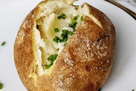

Baked Potato

A hearty favorite! Potatoes are good no matter the occasion, carbs and a full belly is always nice!
Honestly, I could eat potatoes all day and never be tired. But because i'm dieting, carbs are no bueno.
Ingredients
- Large potatoes
- Butter
- Sour cream
- Green onions
- Bacon bits
How to bake
- Bake large potatoes in the oven
- Cut through the center but don't split the potato
- Add butter
- Add sour Cream
- Add green onions and bacon bits to the top of the sour cream
- Enjoy!